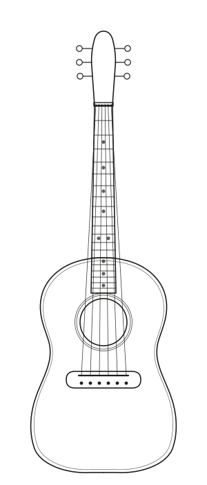

木戸 亮介
きど りょうすけ
ヴァイオリン属
大阪の弦楽器店で7年、クレモナの工房で3年。2009年に神戸で独立しました。修理より先に採寸をする癖は、クレモナで最初の半年、ひたすら寸法を書き取らされたところから来ています。担当は駒、魂柱、ネックまわり。休みの日はだいたい木材屋にいます。
2009年に開いた、職人ふたりの工房です。楽器の販売はしていません。持ち込まれたものを直して返す、それだけをしています。
新しくしたほうが早い場面でも、まず残す方法から検討します。楽器の音は、その楽器が持っている材でできています。
接着は膠を使います。50年後に誰かが開けたとき、困らない形で閉じておくのが、この仕事の作法だと思っています。
同じ場所が2回割れるのは、割れた理由が残っているからです。症状だけ消して返すことはしません。
「正しい寸法」は一通りではありません。手の大きさ、弾く曲、置いている部屋。そこまで聞いてから決めます。
木戸 亮介
きど りょうすけ
大阪の弦楽器店で7年、クレモナの工房で3年。2009年に神戸で独立しました。修理より先に採寸をする癖は、クレモナで最初の半年、ひたすら寸法を書き取らされたところから来ています。担当は駒、魂柱、ネックまわり。休みの日はだいたい木材屋にいます。
有村 沙耶
ありむら さや
ギター製作の専門学校を出て、名古屋のリペアショップで6年。2018年から工房にいます。フレットとナットの仕事が得意で、「押さえやすさ」の相談はほぼ有村が受けています。自分でも弾くので、弾き心地の話が具体的です。
20畳ほどの部屋に、作業台が2台と、材の棚があります。特別な設備はありません。この仕事で一番効くのは、湿度と、明るさと、静かさです。

| 2009 | 木戸が神戸市中央区で開業。最初の3年はひとりで、弓の毛替えが仕事の大半でした。 |
|---|---|
| 2014 | 栄町通の現在のビルへ移転。材の棚を置ける部屋を探して、同じ通りの中で3階へ。 |
| 2018 | 有村が加わり、ギターとフレット楽器の受け入れを開始。 |
| 2022 | お預かり時の採寸を記録として残す形に切り替え。返却時に報告書をお渡しするようになりました。 |
| 2026 | 近隣の3つの音楽教室と、年に一度の点検日を組んでいます。 |